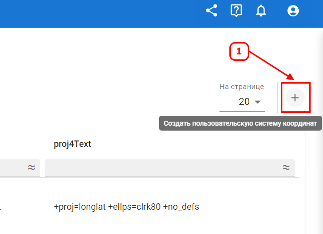

Системы координат
Вкладка "Системы координат" отражает доступные к использованию основные мировые системы координат.
Для добавления пользовательской системы коордниат нажмите (1).
Введите текст в строку (используйте файлы prj выгруженные из QGIS или ArcGis).
Нажмите кнопку "Создать".

Пользовательская система координат добавлена в список и может быть применена на вкладке "Настройки организации".